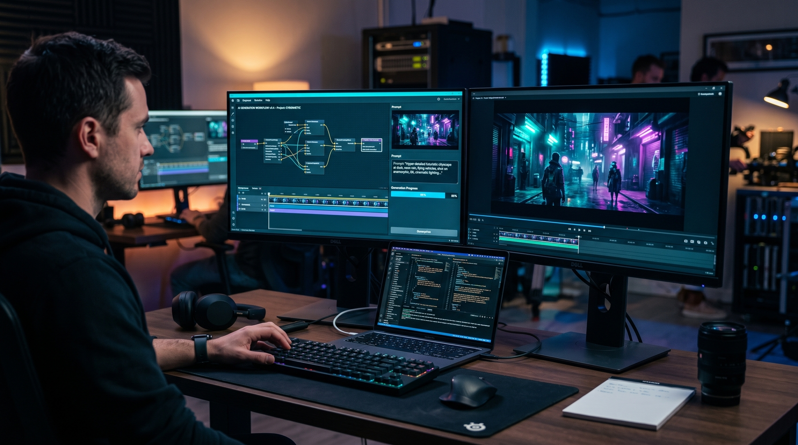

Обычный коммерческий продакшн влетит в копеечку любой компании — от локального интернет-магазина до крупного бренда. Студии, съемочные группы, кастинги, аренда света, камеры и недели на постобработку съедают кучу времени и сотни тысяч рублей. Когда ролики для TikTok, Instagram Reels или таргетинга нужны постоянно, классический подход быстро упирается в финансовый тупик.
Именно поэтому бизнес всё чаще решает заказать ИИ-рекламу у профильных специалистов. Генеративные инструменты полностью меняют подход к созданию видео. Но за красивыми картинками из нейросетей скрывается сложная кухня: в ней легко ошибиться и просто сжечь бюджет.
Давайте разберем, как устроен профессиональный AI-видеопродакшн на практике и на что смотреть, выбирая подрядчика.
Многие думают, что генерация видео — это пара кликов в бесплатном приложении, где нейросеть всё делает сама. На деле крутой рекламный ролик с помощью нейросетей — это результат связки точного промпт-инжиниринга, контроля виртуальной камеры и крепкого монтажа.
В работе используются проверенные модели:
Главное отличие дилетанта от профи в том, что эксперт контролирует процесс и добивается постоянства лиц, одежды и локаций от кадра к кадру. Любитель же выдает набор красивых, но абсолютно несвязанных между собой фрагментов.
Цифры говорят сами за себя. Профессиональная генерация видео дает бизнесу три главных плюса:
По сути, создание AI-контента становится главным инструментом для быстрого теста рекламных гипотез.
Если вы решили привлечь AI-креатора, не наступайте на эти грабли:
Оценивайте специалиста не по красивым обещаниям, а по понятным маркерам:
Искусственный интеллект в видеопродакшене — это уже не далекое будущее, а рабочий инструмент маркетинга здесь и сейчас. Он экономит бюджеты и позволяет реагировать на тренды быстрее конкурентов.
Если вашему проекту нужен качественный видеоконтент или вы хотите обсудить будущую кампанию, пишите мне напрямую в Telegram: @olegwald. Обсудим задачи и найдем лучшее решение!